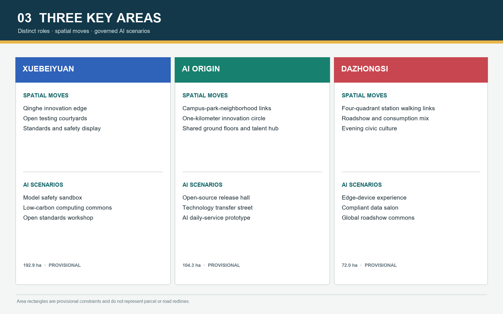
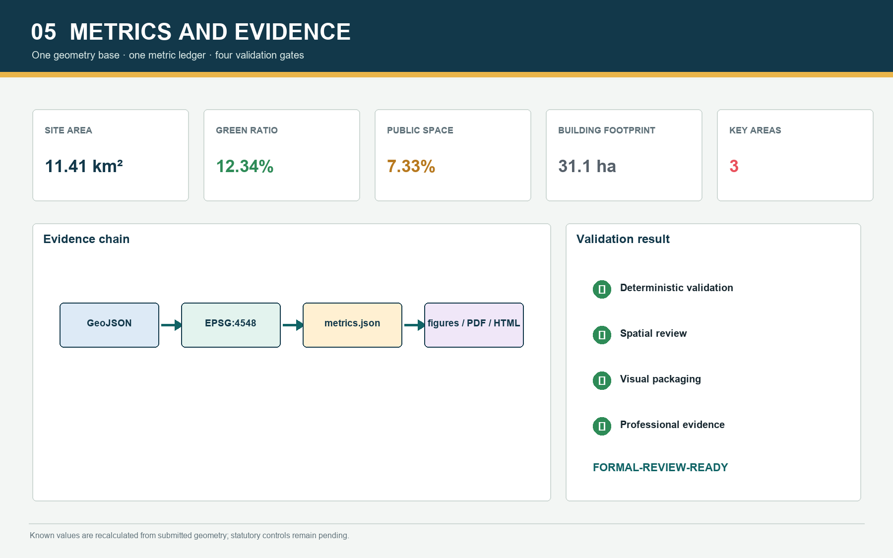

Overview Map / Three-Level Scope





Six pilot packages are staged as reversible tests, medium-term renewal, and long-term professional development.
See sources.json and assumptions.json. The page is fully offline and contains no remote scripts, fonts, tiles, APIs, iframes, or tracking.